网络基础-OSI参考模型和TCP/IP协议（建议收藏）
IT小技术 2019-05-30 22:49:45
TCP/IP协议栈具有简单的分层设计，与OSI参考模型有清晰的对应关系。
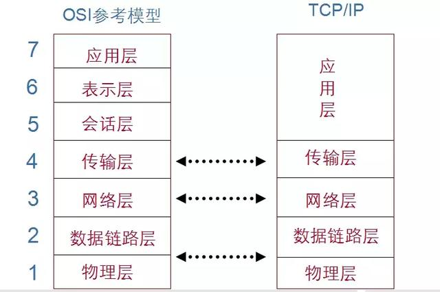
TCP/IP协议栈的封装过程
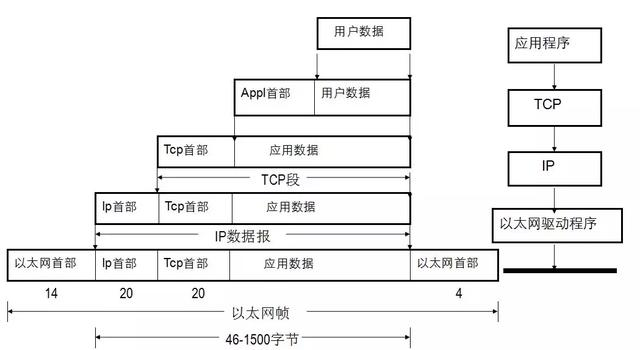
TCP/IP协议数据封装方式
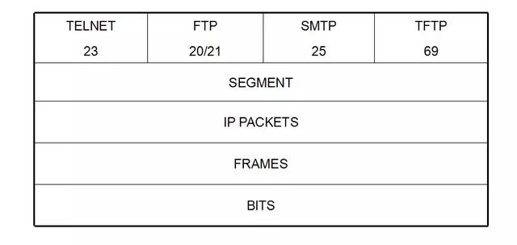
TCP/IP协议栈
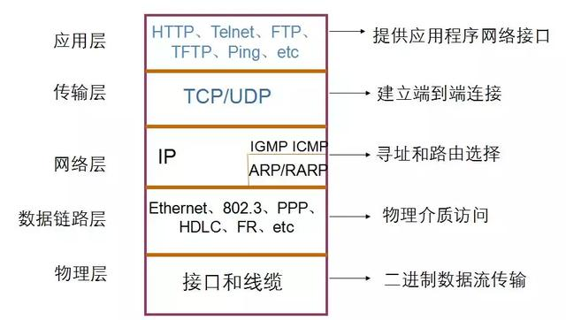
四层-传输层协议

传输层位于应用层和网络层之间，为终端主机提供端到端的连接，以及流量控制（由窗口机制实现）、可靠性（由序列号和确认技术实现）、支持全双工传输等等。传输层协议有两种：TCP和UDP。虽然TCP和UDP都使用相同的网络层协议IP，但是TCP和UDP却为应用层提供完全不同的服务。
传输控制协议TCP：为应用程序提供可靠的面向连接的通信服务，适用于要求得到响应的应用程序。目前，许多流行的应用程序都使用TCP。
用户数据报协议UDP：提供了无连接通信，且不对传送数据包进行可靠的保证。适合于一次传输小量数据，可靠性则由应用层来负责。
UDP报文格式
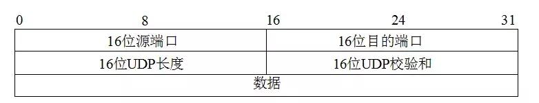
TCP报文格式
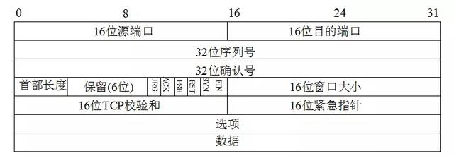
源端口号（Source port）和目的端口号（Destination port），用于标识和区分源端设备和目的端设备的应用进程。TCP端口号与UDP端口号是相互独立的。但如果TCP和UDP同时提供某种知名服务，两个协议通常选择相同的端口号。这纯粹是为了使用方便，而不是协议本身的要求。
TCP连接典型的三次握手
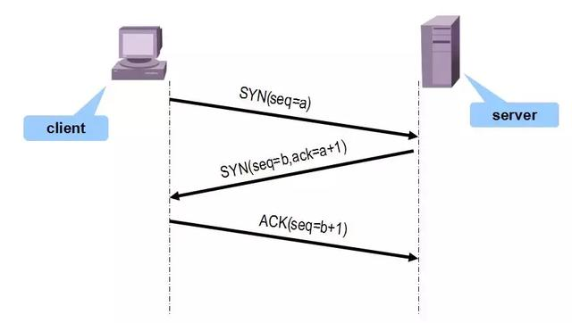
为了在上图所示的主机和服务器之间建立一个连接，首先需要两端设备进行同步。同步（synchronization）是通过各个携带有初始序列号的数据段交换过程实现的。
主机发送一个序列号为a的报文段1；
服务器发回包含序列号为b的报文段2，并用确认号a+1对主机的报文段1进行确认；
主机接收服务器发回的报文段2，发送报文段3，用确认号b+1对报文段2进行确认。
这样在主机和服务器之间建立了一条TCP连接，这个过程被称为三步握手（three-way handshake）。接下来，数据传输开始。
数据传输结束后，应该终止连接。终止TCP连接需要4次握手。
断开TCP连接
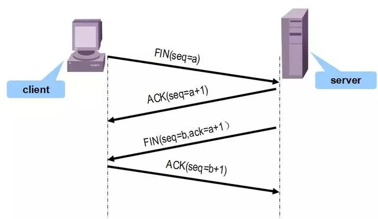
建立一个连接需要三次握手，而终止一个连接要经过4次握手。这由TCP的半关闭（half-close）造成的。既然一个TCP连接是全双工（即数据在两个方向上能同时传递），因此每个方向必须单独地进行关闭。这原则就是当一方完成它的数据发送任务后就能发送一个FIN（报文段4）来终止这个方向连接。当一端收到一个FIN，它必须通知应用层另一端几经终止了那个方向的数据传送。发送FIN通常是应用层进行关闭的结果。
收到一个FIN只意味着在这一方向上没有数据流动。一个TCP连接在收到一个FIN后仍能发送数据。而这对利用半关闭的应用来说是可能的，尽管在实际应用中只有很少的TCP应用程序这样做。
首先进行关闭的一方（即发送第一个FIN）将执行主动关闭，而另一方（收到这个FIN）执行被动关闭。
当服务器收到这个FIN，它发回一个ACK，确认序号为收到的序号加1（报文段5）。和SYN一样，一个F I N将占用一个序号。同时TCP服务器还向应用程序（即丢弃服务器）传送一个文件结束符。接着这个服务器程序就关闭它的连接，导致它的TCP端发送一个FIN（报文段6），客户必须发回一个确认，并将确认序号设置为收到序号加1（报文段7）。
上图显示了终止一个连接的典型握手顺序。我们省略了序号。在这个图中，发送FIN将导致应用程序关闭它们的连接，这些FIN的ACK是由TCP软件自动产生的。连接通常是由客户端发起的，这样第一个SYN从客户传到服务器。每一端都能主动关闭这个连接（即首先发送FIN）。然而，一般由客户端决定何时终止连接，因为客户进程通常由用户交互控制。
端口号
传输层协议用端口号来标识和区分各种上层应用程序。
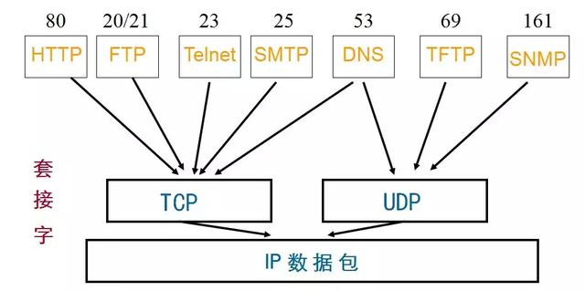
三层-网络层协议
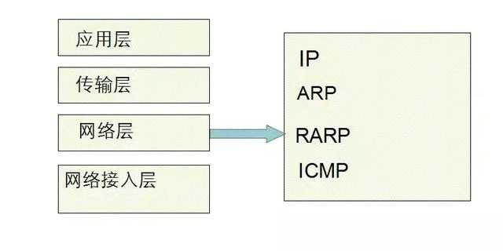
网络层位于TCP/IP协议栈数据链路层和传输层中间，网络层接收传输层的数据报文，分段为合适的大小，用IP报文头部封装，交给数据链路层。网络层为了保证数据包的成功转发，主要定义了以下协议：
IP（Internet Protocol）协议：IP协议和路由协议协同工作, 寻找能够将数据包传送到目的端的最优路径。IP协议不关心数据报文的内容，提供无连接的、不可靠的服务。
ARP协议（Address Resolution Protocol，地址解析协议）：把已知的IP地址解析为MAC地址；
RARP（Reverse Address Resolution Protocol，反向地址解析协议）：用于数据链路层地址已知时，解析IP地址；
ICMP（Internet Control Message Protocol，网际控制消息协议）定义了网络层控制和传递消息的功能。
IGMP（Internet Group Management Protocol，网际组管理协议），一种组播应用协议。
IP报文格式
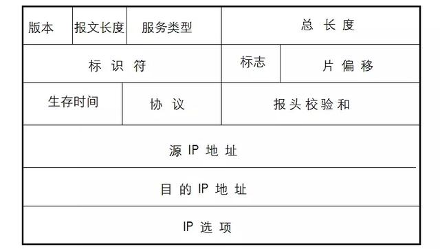
普通的IP头部长度为20个字节，不包含IP选项字段。
版本号（Version）字段标明了IP协议的版本号，目前的协议版本号为4。下一代IP协议的版本号为6。
报文长度指IP包头部长度，占4位。
8位的服务类型（TOS，Type of Service）字段包括一个3位的优先权字段（COS，Class of Service），4位TOS字段和1位未用位。4位TOS分别代表最小时延、最大吞吐量、最高可靠性和最小费用。4bit中只能置其中1bit。如果所有4bit均为0，那么就意味着是一般服务。Telnet和Rlogin这两个交互应用要求最小的传输时延，因为人们主要用它们来传输少量的交互数据。另一方面，FTP文件传输则要求有最大的吞吐量。最高可靠性被指明给网络管理（SNMP）和路由选择协议。用户网络新闻（Usenet news, NNTP）是唯一要求最小费用的应用。
总长度（Total length）是整个IP数据报长度，包括数据部分。由于该字段长16比特，所以I P数据报最长可达65535字节。尽管可以传送一个长达65535字节的IP数据报，但是大多数的链路层都会对它进行分片。而且，主机也要求不能接收超过576字节的数据报。UDP限制用户数据报长度为512字节，小于576字节。但是，事实上现在大多数的实现（特别是那些支持网络文件系统NFS的实现）允许超过8192字节的IP数据报。
标识符（Identification）字段唯一地标识主机发送的每一份数据报。通常每发送一份报文它的值就会加1。
标志位:3比特
多种控制位：
0比特: 保留, 必须为0
1比特: (DF) 0 = 可以分片, 1 =不可以分片.
2比特: (MF) 0 =最后的分片, 1 = 更多的分片.
DF和MF的值不可能相同。
0 1 2
+---+---+---+
| | D | M |
| 0 | F | F |
+---+---+---+
片偏移：指的是这个分片是属于这个数据流的哪里。
生存时间（TTL，Time to Live）字段设置了数据包可以经过的路由器数目。一旦经过一个路由器，TTL值就会减1，当该字段值为0时，数据包将被丢弃。
协议字段确定在数据包内传送的上层协议，和端口号类似，IP协议用协议号区分上层协议。TCP协议的协议号为6，UDP协议的协议号为17。
报头校验和（Head checksum）字段计算IP头部的校验和，检查报文头部的完整性。源IP地址和目的IP地址字段标识数据包的源端设备和目的端设备。
ARP－地址解析协议
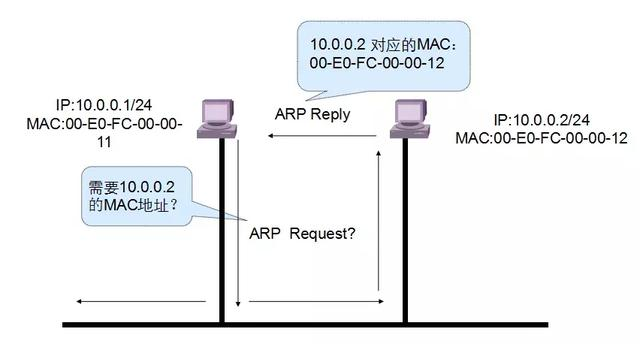
地址解析协议ARP是一种广播协议，主机通过它可以动态地发现对应于一个IP地址的MAC层地址。
每一个主机都有一个ARP高速缓存（ARP cache），有IP地址到物理地址的映射表，这些都是该主机目前知道的一些地址。当主机A欲向本局域网上的主机B发送一个IP数据报时，就先在其ARP高速缓存中查看有无主机B的IP地址。如有，就可查出其对应的物理地址，然后将该数据报发往此物理地址。
也有可能查不到主机B的IP地址的项目。可能是主机B才入网，也可能是主机A刚刚加电，其高速缓存还是空的。在这种情况下，假定主机A需要知道主机B的MAC地址，主机A发送称为ARP请求的以太网数据帧给网段上的每一台主机，这个过程称为广播。发送的ARP请求报文中，带有自己的IP地址到MAC地址的映射，同时还带有需要解析的目的主机的IP地址。目的主机B收到请求报文后，将其中的主机A的IP地址与MAC地址的映射存到自己的ARP高速缓存中，并把自己的IP地址到MAC地址的映射作为响应发回主机A。主机A收到ARP应答，就得到了主机B的MAC地址，同时，主机A缓存主机B的IP地址到MAC地址映射。
RARP－反向地址解析协议
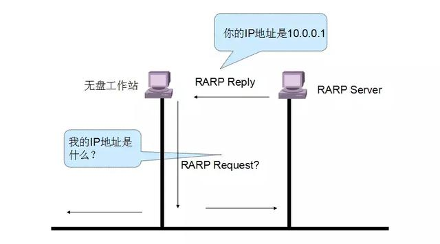
在进行地址转换时，有时还要用到反向地址转换协议RARP。
RARP常用于X终端和无盘工作站等，这些设备知道自己MAC地址，需要获得IP地址。
为了使RARP能工作，在局域网上至少有一个主机要充当RARP服务器。
以上图为例，无盘工作站需要获得自己的IP地址，向网络中广播RARP请求，RARP服务器接收广播请求，发送应答报文，无盘工作站获得IP地址。
对应于ARP、RARP请求以广播方式发送，ARP、RARP应答一般以单播方式发送，以节省网络资源。
ICMP协议
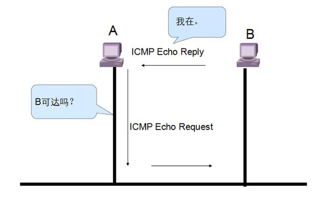
ICMP经常被认为是I P层的一个组成部分。它传递差错报文以及其他需要注意的信息。
ICMP报文通常被I P层或更高层协议（TCP或UDP）使用。一些ICMP报文把差错报文返回给用户进程。
ICMP报文是在I P数据报内部被传输的传输的。
二层-数据链路层功能
传输的。
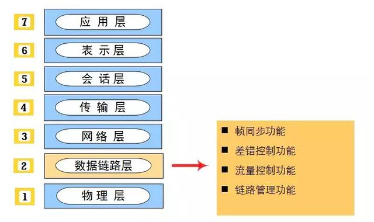
帧同步是指能够从接收到的比特流中明确地区分出数据帧的起始与终止的地方
常见帧同步的方法有：
字节计数法
字符填充的首尾定界符法
比特填充的首尾定界符法
违法编码法
流量控制功能不是只有数据链路层才提供
流量控制功能是控制发送方发送数据的速率
链路管理是指数据链路层连接的建立、维持和释放
IEEE 802制定了系列局域网标准
IEEE802.3： 以太网
IEEE802.4：令牌总线
IEEE802.5：令牌环
IEEE802.11：无线局域网
IEEE802标准涵盖了物理层和数据链路层
哪些设备工作在数据链路层？
交换机
一层-物理层
物理层位于OSI参考模型的最底层，它直接面向实际承担数据传输的物理媒体(即信道)。物理层的传输单位为比特。物理层是指在物理媒体之上为数据链路层提供一个原始比特流的物理连接。物理层协议规定了与建立、维持及断开物理信道所需的机械的、电气的、功能性的和规程性的特性。其作用是确保比特流能在物理信道上传输。
物理层的功能是在终端设备间传输比特流，是OSI参考模型的基础。为了达到数据传输的目的，物理层定义了电压、接口、电缆标准、传输距离等。
目前，大家常用的数据信号传输介质主要有同轴电缆（coaxical cable）、双绞线（twisted pair）、光纤（fibre）、无线电波（wireless radio）等。本部分重点介绍双绞线和光纤。
双绞线是一种最为常用的电缆线，由一对直径约1mm的绝缘铜线缠绕而成，这样可以有效抗干扰。双绞线分为两类：屏蔽双绞线（shielded twisted pair，STP）和未屏蔽双绞线（unshielded twisted pair，UTP）。屏蔽双绞线（STP）具有很强的抗电磁干扰和无线电干扰能力。STP易于安装，很好地隔离外部各种干扰。但是，STP价格相对昂贵。未屏蔽双绞线（UTP）同样易于安装，价格便宜，但是抗干扰能力相对STP较弱，相应地，传输距离较短。
直连网线做法

交叉网线做法

光纤是另外一种网络连接介质，不受电磁信号的干扰。光纤由玻璃纤维和屏蔽层组成，传输速率很高，传输距离很长。但是光纤比其他网络连接电缆更贵。光纤连接器是光的连接接口，非常光滑，不能有划痕，安装比较困难。
在线缆选择上，您应该综合考虑传输距离、价格、带宽需求、网络设备支持的线缆标准等选择恰当的线缆。